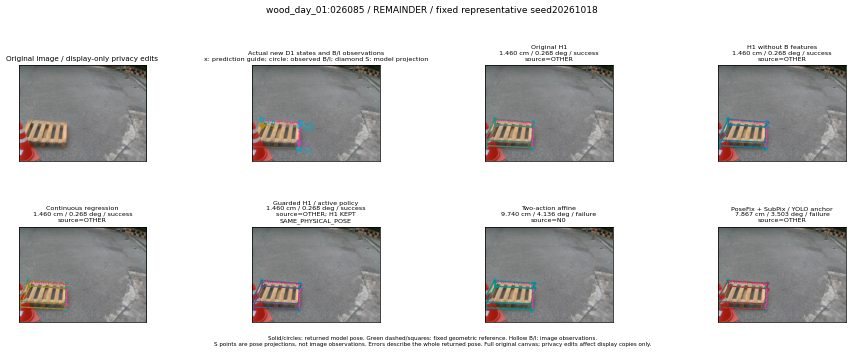

초록 점선은 고정 기하 참조, 색 실선은 반환 자세입니다. 빈 B/I 표시는 영상 관측이며 S는 투영입니다. Trial은 채택되지 않은 진단용 정책입니다. 원영상 전체 범위를 보존했고 개인정보 처리는 표시 사본에만 적용했습니다.
| 방법·seed | 전체 자세 오차·성공 | 실제 출처 | 실행·복귀 |
|---|---|---|---|
| N3 + SubPix (N0) N0 | 9.740 cm / 4.136 deg / failure | N0 | cached_initial_F |
| Full statewise (E0) E0 | 1.911 cm / 1.970 deg / success | E0 | unchanged_frozen_E |
| E0 fixed replay E0_REGENERATED | 1.911 cm / 1.970 deg / success | E0 | COMMON_FIXED_AUTOMATIC_E_OUTPUT_ACTUAL_OR_EXACT_STAGE_REUSED |
| PoseFix + SubPix / PF anchor POSEFIX_SUBPIX_PF_ANCHOR | 7.867 cm / 3.503 deg / failure | OTHER | AVAILABLE |
| PoseFix + SubPix / YOLO anchor POSEFIX_SUBPIX_YOLO_ANCHOR | 7.867 cm / 3.503 deg / failure | OTHER | AVAILABLE |
| Original H1 D1_H1_MLP_s20261018 | 1.460 cm / 0.268 deg / success | OTHER | ACTUAL_ACTION_SELECTED |
| Original H1 D1_H1_MLP_s20261019 | 1.460 cm / 0.268 deg / success | OTHER | ACTUAL_ACTION_SELECTED |
| Original H1 D1_H1_MLP_s20261020 | 1.460 cm / 0.268 deg / success | OTHER | ACTUAL_ACTION_SELECTED |
| Two-action MLP D1_H1_PAIR_MLP_s20261018 | 9.740 cm / 4.136 deg / failure | N0 | ACTUAL_ACTION_SELECTED |
| Two-action MLP D1_H1_PAIR_MLP_s20261019 | 9.740 cm / 4.136 deg / failure | N0 | ACTUAL_ACTION_SELECTED |
| Two-action MLP D1_H1_PAIR_MLP_s20261020 | 9.740 cm / 4.136 deg / failure | N0 | ACTUAL_ACTION_SELECTED |
| Two-action affine D1_H1_PAIR_ROLE_AFFINE_s20261018 | 9.740 cm / 4.136 deg / failure | N0 | ACTUAL_ACTION_SELECTED |
| Two-action affine D1_H1_PAIR_ROLE_AFFINE_s20261019 | 9.740 cm / 4.136 deg / failure | N0 | ACTUAL_ACTION_SELECTED |
| Two-action affine D1_H1_PAIR_ROLE_AFFINE_s20261020 | 9.740 cm / 4.136 deg / failure | N0 | ACTUAL_ACTION_SELECTED |
| Continuous regression R_CONT_F0_s20261018 | 1.460 cm / 0.268 deg / success | OTHER | ACTUAL_FROZEN_BANK_ACTION_SELECTED |
| Continuous regression R_CONT_F0_s20261019 | 1.460 cm / 0.268 deg / success | OTHER | ACTUAL_FROZEN_BANK_ACTION_SELECTED |
| Continuous regression R_CONT_F0_s20261020 | 1.460 cm / 0.268 deg / success | OTHER | ACTUAL_FROZEN_BANK_ACTION_SELECTED |
| H1 without B features H1_NO_B_FEATURE_s20261018 | 1.460 cm / 0.268 deg / success | OTHER | ACTUAL_ACTION_SELECTED |
| H1 without B features H1_NO_B_FEATURE_s20261019 | 1.911 cm / 1.970 deg / success | OTHER | ACTUAL_ACTION_SELECTED |
| H1 without B features H1_NO_B_FEATURE_s20261020 | 1.460 cm / 0.268 deg / success | OTHER | ACTUAL_ACTION_SELECTED |
| Guarded H1 / active policy H1_GUARDED_SWITCH_s20261018 | 1.460 cm / 0.268 deg / success | OTHER | SAME_PHYSICAL_POSE |
| Guarded H1 / active policy H1_GUARDED_SWITCH_s20261019 | 1.460 cm / 0.268 deg / success | OTHER | SAME_PHYSICAL_POSE |
| Guarded H1 / active policy H1_GUARDED_SWITCH_s20261020 | 1.460 cm / 0.268 deg / success | OTHER | SAME_PHYSICAL_POSE |
| Calibration trial / NOT ADOPTED H1_GUARD_CALIBRATED_TRIAL_s20261018 | 1.460 cm / 0.268 deg / success | OTHER | SAME_PHYSICAL_POSE · 연구용 미채택 정책 |
| Calibration trial / NOT ADOPTED H1_GUARD_CALIBRATED_TRIAL_s20261019 | 1.460 cm / 0.268 deg / success | OTHER | SAME_PHYSICAL_POSE · 연구용 미채택 정책 |
| Calibration trial / NOT ADOPTED H1_GUARD_CALIBRATED_TRIAL_s20261020 | 1.460 cm / 0.268 deg / success | OTHER | SAME_PHYSICAL_POSE · 연구용 미채택 정책 |